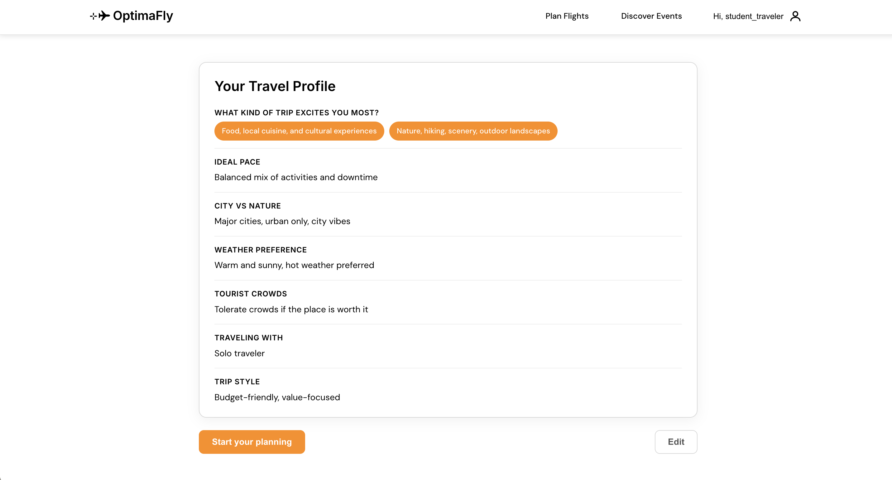
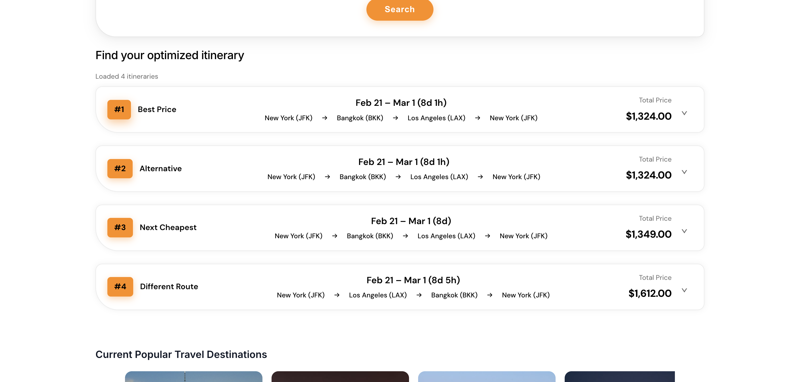
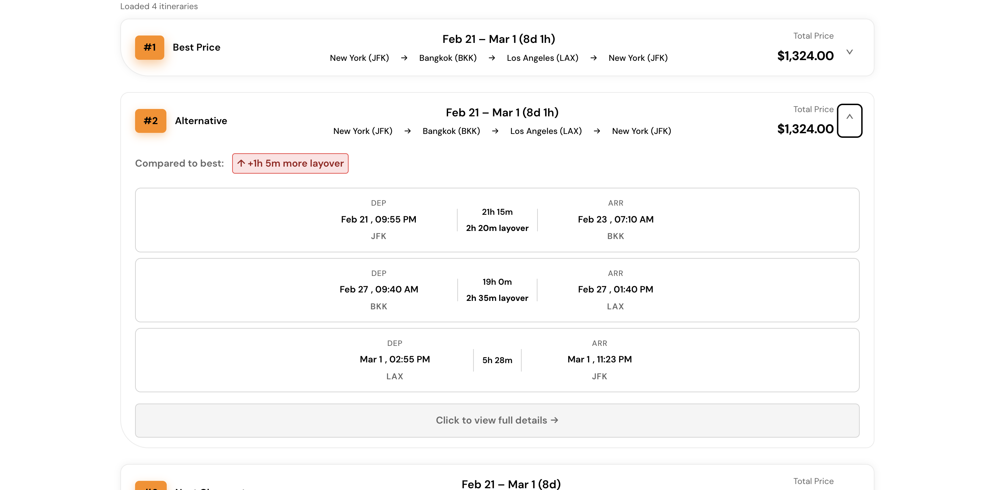
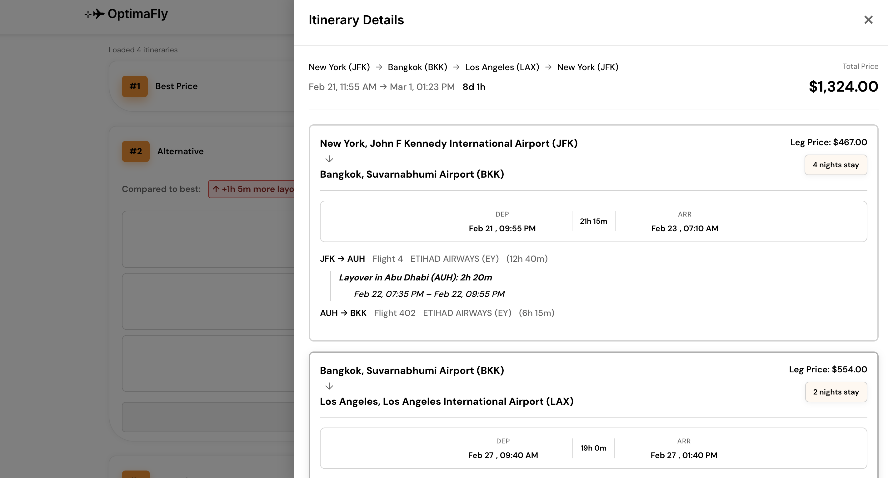

Student traveler
- Age
- 19–22
- Role
- Undergraduate
- Trips
- Breaks · multi-city · cost-first
- Tools
- Laptop & phone
Wants a cheap multi-city plan inside a date window without juggling sites or digging through irrelevant results.

OptimaFly helps you find cheaper multi-city itineraries when you share a flexible date window, how long you want to be gone, and which cities you’re considering. It then pulls in events that line up with those dates, so you can picture the trip, not just the flights.
The question that guided the work:
“How might someone find an affordable multi-city trip inside their real-world window, and leave feeling like each stop is worth it?”
Most trip tools weren’t built for the way students actually plan: you’re balancing cost, dates that flex, and several cities at once, often across a dozen tabs. In conversations with student travelers, the same friction kept showing up: it’s exhausting to stitch fares, calendars, and “what’s happening there?” together, and easy to walk away without a plan you trust.
Those interviews became three anchors for the experience, so every screen answers something people actually said they needed.
One place to set your window, trip length, and cities, so you’re not rebuilding the same trip across three different sites.
Rank what fits first, then spell out tradeoffs in plain language so you can compare options without a spreadsheet.
Show what’s on while you’re there, so a city feels like a weekend, not just a layover.
Student traveler
Wants a cheap multi-city plan inside a date window without juggling sites or digging through irrelevant results.
I ran interviews with people who matched this profile, trying to understand their pain points as well as watching how they typed constraints, skimmed results, and decided when an itinerary was “good enough” over our preliminary build. That behavior is what the flows and UI below are built around.
Before searching, travelers sign up and answer a short questionnaire so preferences and context carry through the rest of the flow.
Sign up
Personalized questionnaire

Questionnaire complete — the traveler can move on to entering cities, dates, and trip length with their profile already in place.
After onboarding, this section follows the path a traveler takes when they enter a travel location, dates available, and how long they want to spend there. Users can spend their time looking at a short list of optimal flights with clear details.
People don’t want to decode a wall of fares. They want to know what’s cheapest, what’s a reasonable alternative, and what they’re trading for a lower price, without opening five cards.
If you only had thirty seconds: labels and “compared to best” lines are there so you can answer “is this worth it?” without doing mental math.

Each row is tagged so you immediately see the role of that option (best price, alternative, next cheapest, or a different route) instead of guessing from price alone.

Expanding a card surfaces a plain-language comparison to the best option (for example extra layover time) so the tradeoff is obvious before you go deeper.

The leg-by-leg view keeps the specifics you’d actually check before booking (pricing, nights, carriers, layovers, and segment times) in one scroll instead of scattered modals.
Once someone has searched and compared flights, the flow doesn’t reset. It keeps track of the destinations they gravitate toward, the dates they’ve said they’re free, and what they shared in the onboarding questionnaire—then surfaces places (and events while they’re there) that match that picture, so recommendations feel tied to their real constraints and tastes, not a generic browse list.